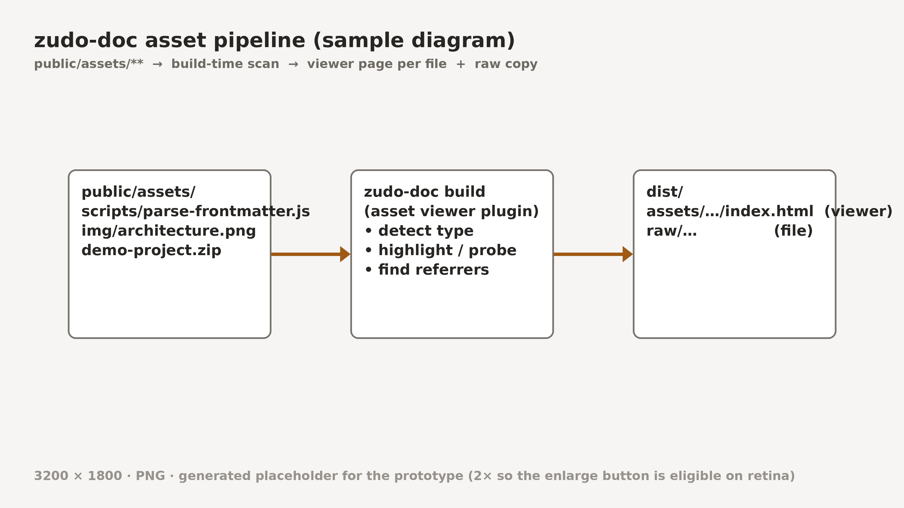

Custom Components
A normal doc page (sidebar/TOC omitted in this mock) showing the four ways an author can point readers at an asset file. Every one of them lands on the viewer page instead of a raw download.
1 · Inline link
Plain Markdown link whose target resolves to an asset. The build rewrites it to the viewer URL and decorates it with a file icon and size, so the reader knows it's a file, not another page. The parser is deliberately dependency-free — see parse-frontmatter.js (2.9 KB) for the full source.
see [parse-frontmatter.js](@assets/scripts/parse-frontmatter.js) for the full source
2 · Asset card
A block-level card for when the file is the point of the paragraph — the "here, take this" moment. View opens the viewer; Download is direct.
assets/scripts/parse-frontmatter.js · JavaScript · 2.9 KB · 94 lines<Asset src="@assets/scripts/parse-frontmatter.js" />
3 · Embedded excerpt from the file
The code block is sourced from the asset at build time (no copy-paste drift), with a file-name header and a footer that links to the whole file in the viewer.
```js file=@assets/scripts/parse-frontmatter.js lines=27-44
4 · Image with a viewer link
Images keep rendering inline as today — including the image-enlarge dialog (hover shows the corner button, click opens it); the caption gains a link to the image's own asset page (full size, dimensions, download).


5 · Download-only files
Archives and other non-previewable files use the same card; the viewer page for them is the download panel — demo-project.zip (1.8 MB).